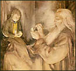
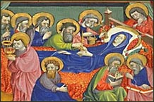
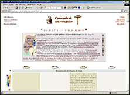

A propósito de Chesterton, y de estos weblogs católicos yanquis: un post de Kairos (un buen weblog ) lista varios libros y autores recomendables; no incluye a Chesterton, y en los comentarios explica por qué:
-
I read and enjoyed "the Everlasting Man" but haven't figured out what to do with it.
I'm trying to reconcile GKC's philosophy with his rather arresting and very
casual use of the N-word for no particular reason. Until I do that, I'm not recommending him.
Estos yanquis, son un caso....
Lindo, lo de nadakedecir de ayer:
-
...
No es por preocupar a nadie, pero pareciera que siempre es posible que haya alguien que nos esté viendo, y que quizás nos vea exactamente como somos, y no como creemos que somos.
...
aunque esto no fuera realmente así, podríamos vivir como si alguien estuviera viéndonos todo el tiempo.
...
Para estar algo presentables ante nosotros mismos, nuestro testigo más implacable, quienes estamos allí viéndonos, todo el tiempo, de día y también de noche.
Sólo recuerdo, ya en otro plano distinto (aunque emparentados a mi ver; y acaso hermanos en su filiación religiosa...) , el motto de Baudelaire -tan cercano a lo demoníaco, también:
- El dandy debe aspirar a ser sublime
sin interrupción; debe vivir y dormir frente a un espejo
Releyendo (picoteando) cositas de Chesterton.
Charlas (Generally speaking) es uno de los varios libros que recopila algunos de sus tantísimos artículos periodísticos. Decía (un poco sorprendentemente, para mí) Borges : "la obra de Chesterton es vastísima y no encierra una sola página que no ofrezca una felicidad".
Y sí; acá, en estos artículos medio deshilvanados, probablemente escritos a las apuradas, sobre temas del momento que a uno no tienen por qué importarle demasiado, aparecen perlas por todos lados.
Uno de esos artículos se titula "Sobre la radiodifusión"; poco prometedor, como casi todos los títulos. Y sin embargo, por la mitad, encuentro hoy un texto muy típico, (con esa mezcla de humor, provocación, paradoja, profundidad de pensamiento y excelente prosa); y casualmente está relacionado con un tema que se me está volviendo recurrente (con Simone Weil y con C. S. Lewis): el peligro de "vivir en el futuro", la idea de que "construir sueños" puede ser más bien un pecado que una virtud, la imaginación como una tentación ...
En tiempos en que estaba de moda diseñar y escribir "utopías" (hoy más bien está de moda mencionarlas como una especie de "cielo" vago), Chesterton escribe:
-
No me gustan la reglamentación, la represión; por eso nunca
he escrito una novela sobre la Utopía, como lo han hecho
casi todos los que han escrito algo en nuestros días.
Siempre me ha parecido que "utopía" significa
reglamentación, antes que emancipación; represión,
antes que expansión. Generalmente se llama República,
y siempre es una Monarquía. Es una Monarquía en
el antiguo y exacto sentido de la palabra; en que
verdaderamente es gobernada por un solo hombre:
el autor del libro.
Este puede contarnos que todos los personajes del libro se deleitan espontáneamente con su bella concepción social; pero de una u otra manera nunca lo creemos. Su mundo ideal es siempre el mundo que él desea; y no el mundo que el mundo requiere.
Por eso, por muy demócratas que estos autores aparezcan en teoría o en sus libros, son siempre bastante déspotas cuando, en la práctica, empiezan a acercarse a la ley. Los primeros pasos modernos hacia cualquier condición utópica, generalmente son tan coercitivos como el Prohibicionismo. Como lo he dicho, son despóticos porque toda su disposición es despótica. Es despótica porque es un sueño, y en los sueños el individuo siempre está solo.
Todo lo que llamamos "Utopía" es sólo la expresión, más bien evasiva y vaga, del sentimiento natural, infantil y romántico de : "¡ Si yo fuera rey! "
Verdaderamente, Disputations es un weblog que me cae muy pero muy bien.
Hoy trae un par de posts: sobre la oración, en particular el rezo (en privado) de la Liturgia de la Horas (la importancia de unir el cuerpo, a través de pequeños actos o gestos); y sobre la " dormición" de María, que hablábamos ayer; John arguye contra la afirmación de que "es indiferente decir que María murió o no murió": en su opinión (que reconoce como discutible) lo razonable es decir que efectivamente murió, y que esa es la opinión de los que saben...
Pd: El autor de este weblog usa el nick de John de Fiesole, que es un pintor que (otro punto en común) es de mis preferidos ... más conocido como Fra Angelico
Atinado post en otro weblog sobre las encuestas, y la incontinencia de los argentinos a la hora de opinar... Aunque yo tiendo a creer que esa temible incapacidad para decir (y decirse) "no sé", es cosa más bien porteña que argentina.
Pero ... no sé....
En inglés:
Una discusión en Slashdot: alguien pregunta (y la pregunta me toca de cerca) sobre lo bueno y lo malo de la "vida académica" en comparación con el trabajo "en la calle", dentro del ambiente de los programadores y vecinos.... (conviene ver estas discusiones poniendo un umbral = 3).
Se trata del típico geek que, pasada la fiebre tecnológica de los punto com, y contando con algunas inclinaciones científicas, está pensando en pasarse (volver) a la vida del investigador/docente en alguna Facultad...
La situación no parece muy distinta a la de acá ... salvo una cuestión de escala, naturalmente...
Releo trozos de El Señor de los Anillos; del tomo 2, cuando Gandalf hace un informe de situación: "El Enemigo, por supuesto, sabe desde hace tiempo que el Anillo está en viaje, y que lo lleva un hobbit [...]  pero aun no ha entendido claramente nuestro propósito. Supone que todos vamos a Minas Tirith, pues eso es lo que él hubiera hecho en nuestro lugar[...] que queramos destruir el Anillo, no ha entrado en los sueños más oscuros que haya podido alimentar. En esto reside nuestra mayor fortuna y nuestra mayor esperanza. ".
Se me ocurre el paralelo (nada muy original, y seguramente alguien
lo habrá notado antes) con el motivo de la redención por muerte en
cruz de Cristo, y Satanás que (aparentemente) no previó eso.
Desde siempre los cristianos se preguntaron algo así: "Si fue el
mismo diablo el que empujó a los que dieron muerte a Cristo,
y si esta misma muerte fue lo que nos trajo la salvación a los hombres,
¿qué paso? ¿el diablo no supo prever esto ? " Aparentemente, no.
Pero cómo... no se supone que "el Enemigo" es tan inteligente ?
no entendió de entrada el misterio de la Encarnación de Dios,
y de la Redención ?
Pues... no (es la respuesta usual, que yo sepa). Satanás seguramente
vio un peligro temible en la persona de Jesús de Nazareth, (recordar
el episodio de las tentaciones), pero no alcanzó a
entender la naturaleza de este "hijo de Dios", y la locura
del plan de la Redención estaba más allá de su "imaginación";
no podía soñar que Dios pudiera rebajarse hasta tal punto...
Si no recuerdo mal, algún que otro Padre de la Iglesia sostuvo la idea de que el asunto de la paternidad putativa de José tenía como objeto el ocultar al diablo el nacimiento virginal de Jesús...
Paralelos más o menos casuales. "Aplicabilidades", diría
Tolkien, (nada de alegorías, eh...).
De todas maneras, para los que se sientan algo incómodos
con estas aplicaciones, va esta otra, más para joder que otra cosa:
La misión del portador del Anillo arranca un 25 de diciembre,
para culminar (tres meses después) un 25 de marzo. Jesús se encarna un 25 de marzo
para nacer (nueve meses después) un 25 de diciembre...
Chupate esa mandarina. ;-)
Pero acaso el paralelo más atrayente, para mí, es el que encontró Jorge Ferro en su librito "Leyendo a Tolkien", entre Gandalf y Melquisedec:
He visto a Melquisedec en diversos lugares; aparecía para
aconsejar, interceder, ordenar muchas cosas que miraban
al bien de los pueblos y las tribus, como también en ocasiones
de triunfo en algunas batallas... Donde él se presentaba,
su autoridad era incontrastable...
He visto muchas veces a Melquisedec; pero nunca como un
hombre, sino como un ser de otra naturaleza; como mensajero
y enviado de Dios. Jamás he visto que habitara un determinado lugar;
ningún país parecía ser su patria; ninguna relación con parientes,
ascendientes o descendientes.. [...] He visto que tenía un parecido
con los ángeles, que yo veía en la Jerusalén celeste, y con
el estilo con que Moisés, más tarde y por orden de Dios, hizo
confeccionar los vestidos de los sacerdotes.
Este texto está tomado de las (notabilísimas) "Visiones
y revelaciones" de
Ana Catalina Emmerich.
Ayer encontré una página de un chileno que metió las Cartas del diablo a su sobrino, de C. S. Lewis, ... completas (!!).
Para aprovechar.
-
Mi querido Orugario:
Me encantó saber por Tripabilis que tu paciente ha hecho varios nuevos conocidos muy deseables y que parece haber aprovechado este acontecimiento de forma verdaderamente prometedora. Supongo que el matrimonio de mediana edad que visitó su oficina es precisamente el tipo de gente que nos conviene que conozca: rica, de buen tono; superficialmente intelectual y brillantemente escéptica respecto a todo. Deduzco que incluso son vagamente pacifistas, no por motivos morales sino consecuencia del arraigado hábito de minimizar cualquier cosa que preocupe a la gran masa de sus semejantes, y de una gota de comunismo puramente literario y de moda. Esto es excelente. Y pareces haber hecho buen uso de toda su vanidad social, sexual e intelectual.
Cuéntame más ¿Se comprometió a fondo? No me refiero a verbalmente. Hay un sutil juego de miradas, tonos y sonrisas mediante el cual un mortal puede dar a entender que es del mismo partido que aquellos con quienes está hablando. Esa es la clase de traición que deberías estimular de un modo especial porque el hombre no se da cuenta de ella totalmente; y para cuando lo haga, ya habrás hecho difícil la retirada.
...
(carta X)
...
Los humanos viven en el tiempo, pero nuestro Enemigo les destina a la Eternidad. Él quiere, por tanto, creo yo, que atiendan principalmente a dos cosas: a la eternidad misma y a ese punto del tiempo que llaman el presente. Porque el presente es el punto en el que el tiempo coincide con la eternidad. Del momento presente, y sólo de él, los humanos tienen una experiencia análoga a la que nuestro Enemigo tiene de la realidad como un todo; sólo en el presente la libertad y la realidad les son ofrecidas. En consecuencia, Él les tendría continuamente preocupados por la eternidad (lo que equivale a preocupados por Él) o por el presente; o meditando acerca su perpetua unión con, o separación de, Él, o si obedeciendo la presente voz de la conciencia, soportando la cruz presente, recibiendo la gracia presente, gracias por el placer presente.
Nuestra tarea consiste en alejarles de lo eterno y del presente. Con. esto en mente, a veces tentamos a un humano (pongamos una viuda o un erudito) a vivir en el pasado. Pero esto tiene un valor limitado, porque poseen algunos conocimientos reales sobre el pasado, y porque el pasado tiene una naturaleza determinada, y, en eso, se parece a la eternidad.
Es mucho mejor hacerles vivir en el futuro. La necesidad biológica hace que todas sus pasiones apunten ya en esa dirección, así que pensar en el futuro enciende la esperanza y el temor. Además, les es desconocido, de forma que al hacerles pensar en el futuro les hacemos pensar en cosas irreales. En una palabra, el futuro es, de todas las cosas, la menos parecida a la eternidad. Es la parte más completamente temporal del tiempo, porque el pasado está petrificado y ya no fluye, y el presente está totalmente iluminado por los rayos eternos. De ahí el impulso que hemos dado a esquemas mentales como la Evolución Creativa, el Humanismo Científico, o el comunismo, que fijan los efectos del hombre en el futuro, en el corazón mismo de la temporalidad. De ahí que casi todos los vicios tengan sus raíces en el futuro. La gratitud mira al pasado y el amor al presente; el miedo, la avaricia, la lujuria y la ambición miran hacia delante. No creas que la lujuria es una excepción. Cuando llega el placer presente, el pecado (que es lo único que nos interesa) ya ha pasado. El placer es sólo la parte del proceso que lamentamos y que excluiríamos si pudiésemos hacerlo sin perder el pecado; es la parte que aporta el Enemigo, y por tanto experimentada en el presente. El pecado, que es nuestra contribución, miraba hacia delante.
...
(carta XV)
 Vísperas de la fiesta de la Asunción de la Virgen
(15 de agosto).
Vísperas de la fiesta de la Asunción de la Virgen
(15 de agosto). Siendo la muerte (y la corrupción) castigo del pecado, y siendo María inmaculada, al pueblo cristiano siempre se le hizo cuesta arriba mentar la "muerte de María"; desde antiguo se habló más bien (con una especie de pudor) de su "dormición", y se creyó que había sido llevada ("asunta") al cielo inmediatamente, en cuerpo y alma. 
Esta tradición recién fue definida y declarada dogma de fe en 1950 (el único "dogma" declarado por la iglesia en el siglo XX, si no me equivoco).
Creemos que María está en la gloria, en cuerpo y alma; dichosa anticipación de la resurrección que esperamos.
El Padre Nuestro según Simone Weil
(continuación)
"Nuestro pan, que es eterno, dádnoslo hoy" (continuación)
-
Tenemos necesidad de pan. Somos seres que recibimos continuamente nuestra energía desde
afuera, pues a medida que la recibimos la agotamos en el esfuerzo. Si nuestra energía no se
renueva diariamente, nos volvemos carentes de fuerza e incapaces de movimiento.
Aparte de la alimentación propiamente dicha, en sentido literal, todos los estimulantes son para nosotros fuentes de energía. El dinero, el ascenso social, la consideración, los premios, la celebridad, el poder, los seres amados, todo lo que infunde en nosotros la capacidad de obrar, es como el pan. Si alguna de esas ataduras penetra bastante profundamente en nosotros, hasta las raíces vitales de nuestra existencia carnal, su privación puede quebrarnos e inclusive hacemos morir. Esto se llama morir de pena. Es como morir de hambre. Todos esos objetos de afecto constituyen, con el alimento en sentido literal, el pan de aquí abajo.
Depende enteramente de las circunstancias el que los tengamos o los perdamos. Con respecto a las circunstancias no debemos pedir nada, sino que sean conformes a la voluntad de Dios. No debemos pedir el pan de aquí abajo.
Hay una energía trascendente, cuya fuente está en los cielos, y que corre por nosotros desde que la deseamos. Es realmente una energía; ejecuta acciones por intermedio de nuestra alma y nuestro cuerpo.
Debemos pedir este alimento. En el momento en que lo pedimos y por el hecho de que lo pedimos sabemos que Dios quiere dárnoslo. No debemos soportar, el permanecer un solo día sin él. Pues cuando las energías terrestres, sometidas a la necesidad de aquí abajo, son las únicas que alimentan nuestros actos, sólo podemos hacer y pensar el mal. "Dios vio que las maldades de los hombres se multiplicaban sobre la tierra, y que lo producido por los pensamientos de su corazón era constantemente, únicamente malo." La necesidad que nos obliga al mal gobierna todo lo que existe en nosotros, salvo la energía de lo alto en el momento en que penetra en nosotros. Y no podemos hacer provisiones de ella.
- Tratemos pues de entender (defender?) a Simone, cuando dice "no debemos pedir el pan de aquí abajo".
- Antes: ¿ cuál es "el otro" pan ? ¿cuál es esa "energía",
ese alimento verdadero que Dios quiere darnos, y que debemos
(ese sí, ese solamente) pedir ?
¿ La Eucaristía ? Sí, pero no exclusivamente; acá, más bien se trata -creo- de "la gracia" (es claro que la Eucaristía es la fuente de la gracia para nosotros, pero no la única, no al menos en sentido material). (Acordarse además de que Simone no llegó a comulgar, aunque Dios sabe cuánto habrá deseado hacerlo).
- Debemos pedir ese pan: la Gracia. Está bien. Pero... el otro no? No nos está permitido pedir las cosas "de acá abajo" ?
- Simone dice que todo "lo de acá abajo", está bajo
las "circunstancias"; esto para ella es esencial, en
su visión del universo como "perfecta obediencia a
la voluntad de Dios"; y así como antes decía que hay
que amar todo lo pasado, incluso nuestros pecados,
en cuanto contemplados como acontecimientos "queridos"
por Dios -la virtud de la aceptación- acá parece
estirar esto al extremo de llevarlo al futuro: no
desear nada del futuro "terrenal", sólo que sea
conforme a la voluntad de Dios.
- No es desorbitadamente "místico", esto? ¿Es verdaderamente cristiano ? ¿No debemos pedir esas cosas ? ¿Acaso Jesús no exhorta a orar por la salud de un enfermo, por ejemplo ?
- Veamos otro texto de Simone, de "Echar Raíces":
- Todo lo que se refiere a la plegaria evoca
algo parecido a un mecanismo. Cualquier deseo
real de un bien puro, a partir de un umbral de
intensidad, hace descender el bien correspondiente.
... Cuando se cumplen las condiciones, Dios jamás
niega. ... Por eso Cristo nos aconseja
ser importunos. Las comparaciones que emplea
hacen pensar en un mecanismo. Lo que obliga
al juez a dar satisfacción a la viuda es
un mecanismo psicológico: "haré justicia a esta
viuda porque ya está agotando mi paciencia";
lo mismo obliga al hombre dormido a abrir
la puerta al amigo "Si no se levanta por
amistad, lo hará al menos por su insistencia"
Si nosotros ejercemos una especie de presión sobre
Dios, eso sólo puede ser un mecanismo instituido
por el mismo Dios. Este mecanismo debe ser tan riguroso
como un mecanismo físico; pero así como los mecanismos
naturales determinan el acontecimiento físico (en cuanto tal),
los mecanismos sobrenaturales determinan la producción
del bien puro como tal.
Y así lo confirma la experiencia práctica de los santos. - Esto creo que puede aclarar algo... No se trata de
renunciar a la plegaria, ni de matar el
deseo del bien (la salud de un ser querido,
el hambre de un pobre) en nombre de una
"conformidad con la voluntad de Dios";
no se trata de quietismos ni de nirvanas.
Casi al revés: debemos anhelar el bien (con o sin mayúsculas). Y aunque este deseo venga en nosotros oscurecido, manchado con bienes aparentes, no importa: limpiar el deseo, nunca matarlo. La misma Simone decía en otro lugar "el deseo del Bien, es un bien". - Y entonces ? Si yo rezo por la salud de mi amigo
enfermo, qué ? Estoy pecando por no conformarme con la
voluntad de Dios, o estoy deseando el Bien ?
Vos sabrás...
Depende de si lo tuyo un deseo del Bien puro (aunque sea "proyectado" acá abajo), o si es un reclamo de "alimento" terreno, para tu subsistencia carnal. Vos (y muy en el fondo) sabrás. - En particular, acá, en el Padrenuestro, sólo
debemos (dice Simone, yo no sé) pedir el Bien puro:
la Gracia, la presencia de Dios.
Kierkegaard decía "La pureza de corazón es querer una sola cosa".
Y Jesús dice: "Busquen, primero que nada, el reino de Dios; el resto vendrá por añadidura". Es más o menos lo mismo ... creo. - Es notable, por otra parte, eso de que "no podemos
hacer provisiones" de este alimento. Es otra ilusión
a rechazar. Existe (incluso -sobre todo-
en los tipos con berretines religiosos) la tentación
de ver nuestra vida espiritual en términos
de una economía capitalista (algo así decía Eric Springsted
en su prólogo a una selección de Simone Weil, justamente);
como si la tarea fuera acumular "virtud", para
"desarrollar" nuestra alma, armando nuestros pequeños
espacios para, con nuestro próspero yo, hacer el
bien a nuestro alrededor... todo en los sentidos
más espirituales que quieras.
Pero Cristo dice otra cosa. La gracia hay que pedirla para hoy. Y al que cree estar "aprovisionado", le caen acaso las palabras de apocalipsis: ciego, pobre y desnudo.
Me sorprende un poco descubrir que este weblog (en inglés, protestante) me haya incluido en sus links... Pero muchas gracias.
Una deliciosa muestra de prosa intelectual académica:
-
Si el concepto de isla tiene que ver con
una concepción de límites,
es sobre límites que vamos a construir esta aproximación al imaginario venezolano de los años treinta. Los límites que circunscriben el imaginario nacional en un momento de crisis y que tienden hacia dos objetivos encontrados. Por un lado, las tentativas de reconstruir el relato nacional sobre la recuperación de los vínculos con el pasado para elaborar proyectos nacionales viables en un futuro inmediato. Por otro, la construcción de relatos que hagan evidentes los límites de una representación que, en su búsqueda de legitimidad en el relato histórico, ha perdido el rumbo y ya no sabe cómo volver a ocupar un lugar central dentro de la narrativa de lo nacional.
Classic Catholic Literature es un weblog de un yanqui con gustos muy parecidos a los de uno ... ver lista de escritores favoritos del siglo XX, a la izquierda ... o este listado de sus 127 "razones" para ser católico (en realidad, personajes -en su mayoría, escritores- del siglo xx).
En este post sugiere que el cuento Hoja de Niggle, de Tolkien podría aplicarse al matrimonio . No está mal (aunque dudo de que esta aplicación estuviera en la mente -conciente- de JRRT).
Mejor tarde que nunca: el domingo, 11 de agosto, además de Santa Clara de Asís, fue el día de (la muerte de) el cardenal John H. Newman (1801-1890), tipo "grosso" (como dicen los chicos), si los hay... y muy querido por mí y por tantos. Gerard Serafin le hizo un lindo post homenaje (si el link no anda bien, buscar el post del domingo).
Un gigante, verdaderamente; de esos que ( como Dostoyevsky en literatura) se imponen
por peso propio, por encima de las tensiones partidarias-ideológicas del ambiente... y por encima
de sus propios dolores y "fracasos".
Juan Pablo II lo declaró "venerable" en 1991.
Entre otras cosas, es el padre de toda una generación inglesa de católicos
conversos de una calidad insólita: Chesterton, por mencionar el principal...
y también, por qué no, Tolkien.
Por los frutos se conoce el árbol... (Pero, éste es un fruto o un árbol ? Las dos cosas).
 Trabajar; hay que trabajar; si no por gusto, por desesperación.
Trabajar; hay que trabajar; si no por gusto, por desesperación.Que al fin de cuentas, el trabajo aburre menos que el placer.
En los antiguos claustros, sobre los grandes muros
se pintaban retablos de la santa verdad
que exaltaban de unción los espíritus puros,
que el frío suavizaban de aquella austeridad.
Antaño un monje ilustre, ahora ya olvidado,
cuando aún florecía de Cristo la semilla
tomando por taller aquel lugar sagrado
glorificó la Muerte con expresión sencilla.
Mi alma es una tumba que, indigno cenobita,
desde la eternidad mi propio cuerpo habita...
Y nada alegra el muro del claustro y sus abrojos.
Triste monje holgazán... ¿Cuándo sabré yo hacer
del viviente espectáculo de este mísero ser
la labor de mis manos y el amor de mis ojos?
Silogismo-teorema para desarrollar, desmenuzar y (acaso) destruir, algún día de estos:
Un sitio en español sobre canto gregoriano. No tiene mucho material on line, pero tienen un pdf para bajar, "Características del Canto Gregoriano", que es una introducción decente al tema.
Swimming the Tiber (subtitulado: "An atheist comes to Catholicism") es el weblog de un yanqui que está convirtiéndose al catolicismo; un catecúmeno. Lindo.
Cada vez me cuesta más escribir con lapicera... y cada vez escribo menos y peor; siempre mi caligrafía fue espantosa, y ahora, vacilando entre letras manuscritas y de imprenta, ya se torna casi ilegible aún para mí...
Mal de muchos .... dice La Nación.
Lecturas de la misa de hoy:
Del Antiguo Testamento: la epifanía (manifestación sensible de Dios) a Elías:
-
Entonces se le dijo: «Sal fuera y permanece en el monte esperando a Yavé, pues Yavé va a pasar.»
Vino primero un huracán tan violento que hendía los cerros y quebraba las rocas delante de Yavé. Pero Yavé no estaba en el huracán.
Después hubo un terremoto, pero Yavé no estaba en el terremoto.
Después brilló un rayo, pero Yavé no estaba en el rayo.
Y después del rayo se sintió el murmullo de una suave brisa.
Elías al oírlo se tapó la cara con su manto...
Claro que para impresionar a la tilinguería de por acá, el episodio tendría que estar vestido con colores orientales (el maestro zen, un lenguaje más sentencioso, etc) . Y bue. (mejor no insistamos con esto, a ver si a algún cura de esos avanzados se le ocurre algo en esa línea... ya demasiado tenemos que aguantar, con ciertas traducciones....)
Segundal lectura: palabras asombrosas de San Pablo:
-
Siento una tristeza muy grande y una pena continua, hasta el punto que
desearía ser maldito y alejado de Cristo en lugar de mis hermanos; me refiero a los de mi raza. Ellos son los judíos...
Y la lectura del evangelio, es la de la
Caminata sobre las aguas.
Pero yo me fijé más sobre la oración de Jesús:
-
14:23 Después de despedir a la gente, subió al monte a solas para orar; al atardecer estaba solo allí
-
La era moderna nació como un proceso de creciente independencia: ya no depender de la
tradición, ya no depender de los padres, ya no depender de la fe, ni de los límites
naturales, ni del destino ... ¿ni de la muerte?
El gesto más propio del hombre moderno es el de liberarse de esas sujeciones. Este gesto tiene que conducir en algún momento a liberarse de la verdad. Y así por fin el hombre se libera del yugo más pesado.
....
Tradición, padres, fe, destino, muerte, verdad, obediencia...
Cuando el progresista escucha estas palabras se
sobresalta. En ellas presienten el fantasma del fascismo o, según una terminología muy en
boga en nuestros días, del fundamentalismo. La soga en la casa del ahorcado.
Hay que comprender lo que el progresismo ha llegado a ser en estos siglos y, por sobre todo, en las últimas décadas, para advertir que esta categoría de límites tan aparentemente difusos se constituye en algo más que una posición política, más que una profesión de fe en la ciencia y en la técnica, más que la disposición psicológica a proyectar la vida en un futuro siempre aplazado, más que la actitud económica del burgués emprendedor. El progresismo es todo eso junto porque es otra cosa: una posición metafísica, un modo de ser en el mundo. Esta posición metafísica del hombre moderno es la que organiza y da sentido a sus valores, sus reflejos, su ideología, sus deseos, su trabajo y su ocio, sus deberes y su credo. Por eso ciertas palabras irritan su piel, por eso se asusta ante la posibilidad de rozar estas cuestiones con el pensamiento.
Hay que comprender hasta qué punto el progresismo ya no demarca una posición política, ya que todos son progresistas, desde los líderes de la OTAN hasta los curas de la villa, desde Cavallo hasta Soledad Silveyra.
Hay que comprender hasta qué punto el corazón progresista está anegado de terror, amenazado por el talibán que él mismo engendra, desasosegado por la precariedad de las torres que habita, asfixiado por el aire que envenena, encerrado en su propio laberinto.
 Hace varios días que vengo reescribiendo mi Concordia de los Evangelios, con XHTML y CSS (qué fashion!) ... Acabo de subirla, por fin.
Todavía faltan cositas que retocar, seguramente.... y no es un
xhtml muy estricto que digamos (aunque valida), y sigo con las tablas, y los estilos
no los tengo muy emprolijados ... (y no quiero mirarlo con el Netscape 4 para no deprimirme
demasiado). Pero bueno, es la primera vez; ya mejoraremos....